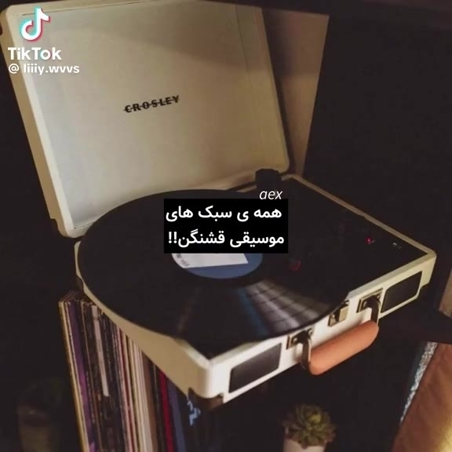
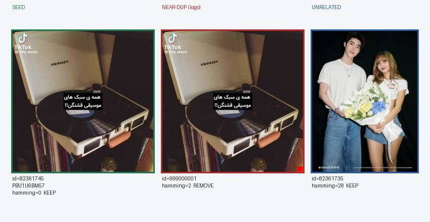
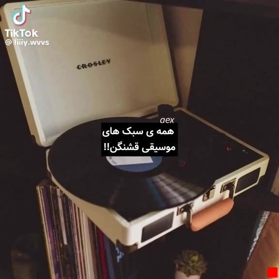

تست بصری فیلتر related (REL-DUP4)
seed واقعی ویسگون + نسخهٔ لوگودار مصنوعی + یک پست نامرتبط. قانون: اگر Hamming ≤ ۱۰ → همان رسانه → از لیست related حذف میشود. فقط روی ES لوکال؛ پرود دست نخورده.


ورودی فیلتر گیتوی:
seed=82361745 candidates=[999000001, 82361735]
خروجی:
survivors=[82361735]
PASS — near-dup حذف شد؛ unrelated ماند.